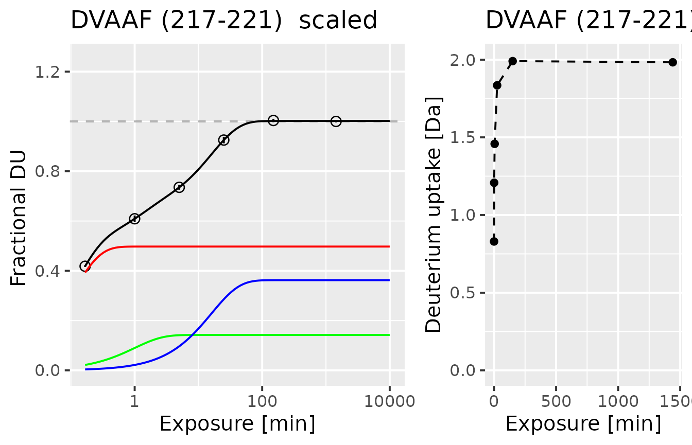
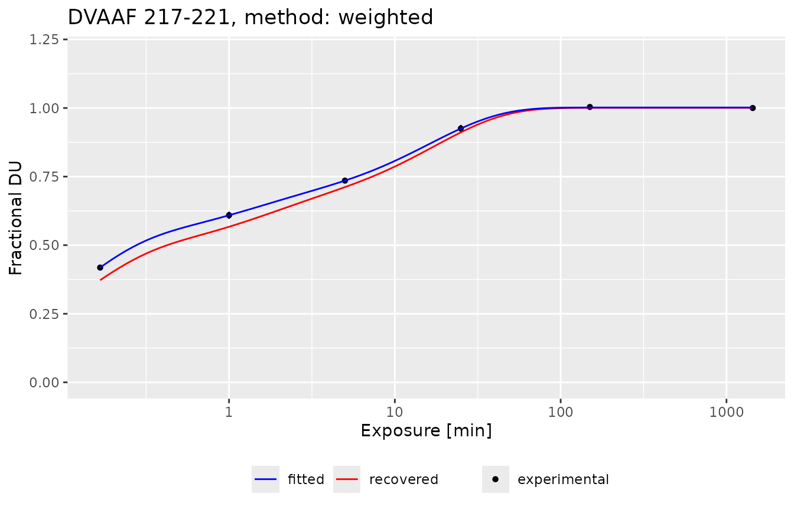

Results validation
validation.RmdHow to validate the results?
This article describes the featured methods of validation of the HRaDeX workflow, based on the peptide uptake curve fitting, and the aggregation of fitted parameters from the peptide level into high-resolution. As this process is dependent on many parameters, we offer the possibility to validate the analysis in multiple steps.
For more information about the workflow check dedicated article.
Let’s start with running the analysis, using exemplary data, and default parameters.
protein_length <- 224 + 1 ## as r3dmol counts differently
# calucalting deuterium uptake for the alpha component
kin_dat <- HRaDeX::prepare_kin_dat(alpha_dat,
state = "Alpha_KSCN",
time_0 = 0,
time_100 = 1440)
fit_k_params <- data.frame(
start = c(k_1 = 2, k_2 = 0.2, k_3 = 0.02),
lower = c(k_1 = 1, k_2 = 0.1, k_3 = 0.0001),
upper = c(k_1 = 30, k_2 = 1, k_3 = 0.1))
# the fitting process for the whole peptide pool
fit_values <- create_fit_dataset(kin_dat,
fit_k_params = fit_k_params,
trace = F,
fractional = T,
workflow = 321)
# aggregation of the peptide level results in high-resolution data
hires_params <- calculate_hires(fit_values,
fractional = T,
method = "weighted",
protein_length = protein_length)Fit selection
Depending on the supplied data, the fitting process for each peptide includes fitting all selected possible functions: three-, two- and one-component exchange functions. The best-fitted model is selected based on the BIC value. Although it is impossible to investigate the results of all possible models, we can analyze the chosen one.
The BIC values are presented in the data frame containing fitting results, as well as RSS. Then, it is possible to draw the fitted model alongside the experimental data to control if the result is satisfactory.
Here we present the results for one, selected peptide DVAAF:
example_fit_dat
#> id Protein State sequence start end max_uptake n_1 k_1
#> 1 106 db_eEF1Ba Alpha_KSCN DVAAF 217 221 4 0.4973596 9.334779
#> n_2 k_2 n_3 k_3 rss bic class_name k_est
#> 1 0.1422129 1 0.3623463 0.06211225 7.381055e-06 -52.08054 NA 4.798254
#> fitted color
#> 1 3 #7F245C
plot_double_uc(example_kin_dat, example_fit_dat)
On the right panel, there is a normalized experimental uptake curve, with a logarithmic time scale. The circles mark the fractional deuterium uptake. Inside the circles, there are error bars presenting the combined uncertainty of the measured fractional deuterium uptake. Due to the quality of the presented data, the error bars are barely visible. The black line indicates the fitted three-component exchange function, while the red, green, and blue lines indicate the components of the fitted (fast, medium, and slow exchanging group, respectively). On the right, there is an uptake curve presenting deuterium uptake in Daltons, for users to grasp an understanding of uptake curve types.
This function can be plotted for any peptide, preferably ones selected by the user, e.q. with the greatest RSS values.
- Future plans: package function to create the pdf file with all of the uptake curves.*
In GUI
In the UC plots tab, there are listed plots (the ones
described just above) for all of the available peptides. Those plots are
static, serving the purpose of a quick glimpse of the quality of the
fits. For more in-detail analysis, there are plots available upon
clicking the selected peptide name in the table with parameters, in the
Fit params tab. Not only there are precise numeric values
presented in the table, but the plots below are interactive.
Region classification consistency
Before the final data aggregation step, it is important to check if the classification results are consistent for overlapping peptides within regions. The peptides close to each other should be classified similarly, which can be noted by the presence of similar colors. The long peptides (with lengths exceeding 10 amino acids) should be treated carefully, as in their case it is harder to pinpoint the exact region of exchange and distinguish between the exchange rates of the residues.
The plot below shows the coverage plot with assigned color-code classification. We can see that the medium part - the linker of the alpha compound - is exchanging very fast due to a lack of protection. The C- and N-terminus parts of the protein show the consistency of region classification.
HRaDeX::plot_cov_class(fit_values)High-resolution results
Once we have the data aggregated into the high-resolution level, using one of two available methods, we can take a step back and calculate the deuterium uptake for each peptide using the high-resolution data for amino acids building that peptide. Then, we plot the result next to the experimental data to check the goodness of the data. Then, we calculate the MRSE - for each peptide and the whole peptide pool.
Here, we use the weighted approach.
The comparison of recovered deuterium uptake and experimental deuterium uptake can be presented on the plot:
recreate_uc(example_kin_dat, fit_values, hires_method = "weighted")
#> Warning in stat_function(fun = function(x) {: All aesthetics have length 1, but the data has 6 rows.
#> ℹ Please consider using `annotate()` or provide this layer with data containing
#> a single row.
#> Warning in stat_function(fun = function(x) {: All aesthetics have length 1, but the data has 6 rows.
#> ℹ Please consider using `annotate()` or provide this layer with data containing
#> a single row.
This plot shows three pieces of information: the black points present the experimental deuterium uptake, the blue line presents the fitted three-component exchange function, and the red line presents the recovered deuterium uptake values from high-resolution data. As we see, the recovered uptake curve preserves the type of exchange and recovered values are close to the experimental ones.
But judging goodness by the eye is not sufficient. We need a more objective criterion - RMSE.
# recreating the uptake values for peptides
rec_uc_dat_alpha <- create_uc_from_hires_dataset(kin_dat,
fit_values,
hires_method = "weighted")
# calcuation of RMSE
rec_uc_rmse_dat_alpha <- calculate_recovered_uc_rmse(rec_uc_dat_alpha, sort = "ID")The calculated RMSE for each peptide can be presented in two forms:
- as
butterflyplot. The Y-axis shows the RMSE values and the X-axis shows the peptide by their ID. Although this plot offers an overview of values and enables the choice of a satisfactory threshold, it lacks information on length and position within the protein structure.
plot_recovered_uc_coverage(rec_uc_rmse_dat_alpha, style = "butterfly")
- as a
coverageplot. Here, the RMSE values are shown in the intensity of the red color, and the peptide position and length are presented on the protein sequence.
plot_recovered_uc_coverage(rec_uc_rmse_dat_alpha, style = "coverage")
The total RMSE from all peptides is 0.0418 using the
weighted aggregation approach.
What to improve?
We controlled the steps of the analysis, and what to do next. If
there are some inconsistencies that are affecting the final result, it
may be beneficial to re-run the analysis with changed parameters.
Sometimes, when the regions of protein undergo the exchange slowly, the
slow exchange group should be shifted, leaving the
medium exchange ranges more broad.